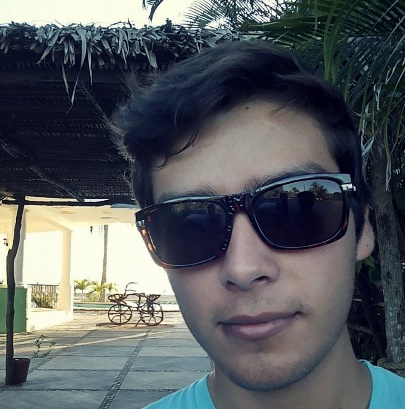

Carlos Alberto Noriegas Suárez

Vengo de Tepic, Nay. Y estoy en Guadalajara para estudiar en ITESM la carrera de Electronica pero despues me cambie a Sistemas Computacionales.
Por el momento no trabajo pero me gustaría trabajar en algo relacionado con redes.
Todavía no tengo mucha experiencia con herramientas web, solo html, css Y un poco de JavaScript.
Los unicos proyectos que desarrolle son los que hice en alguna clase en el Tec, pero uno de los que más le dedique tiempo y me gusto más fue una aplicacion para android
que ayudaba al usuario a tenenr en orden las tareas y trabajos que tenia que hacer para sus materias.